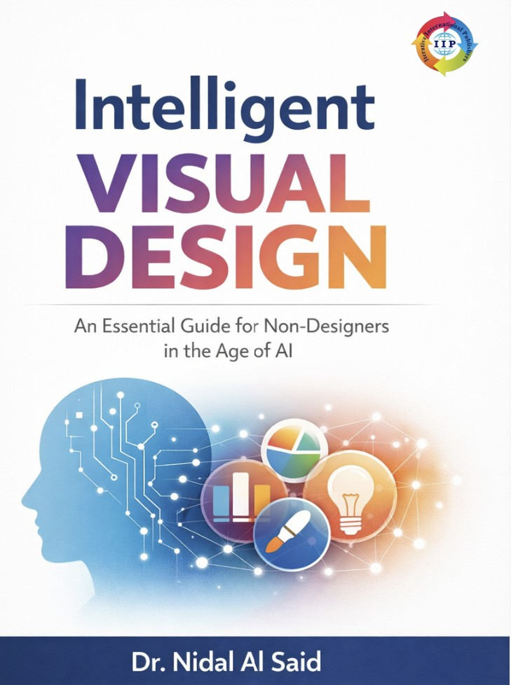
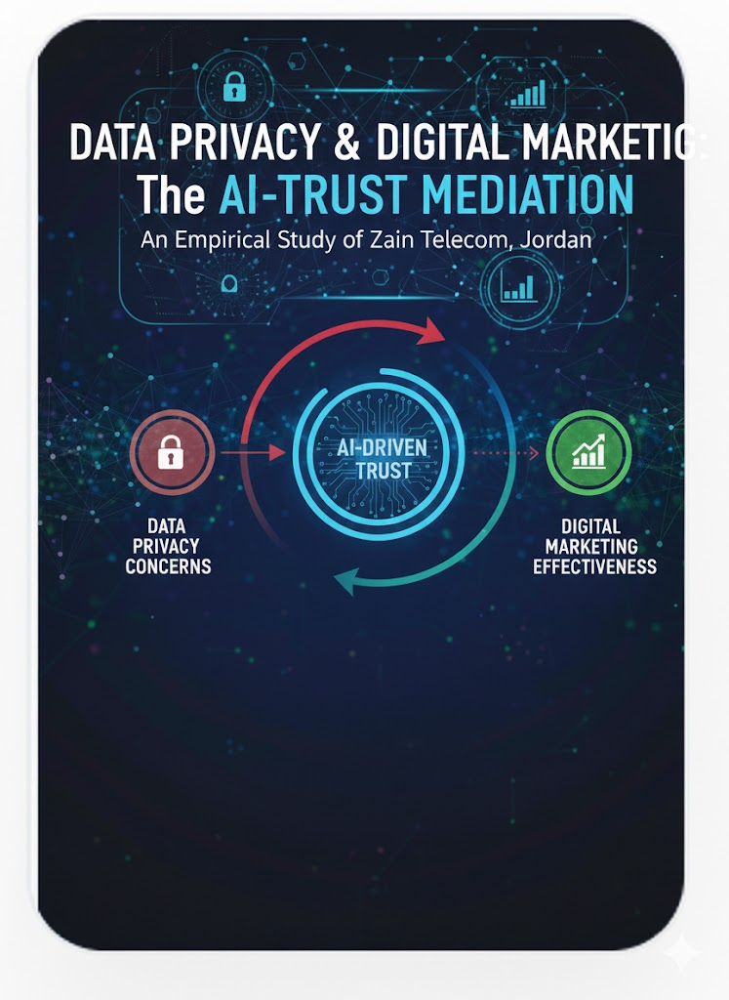
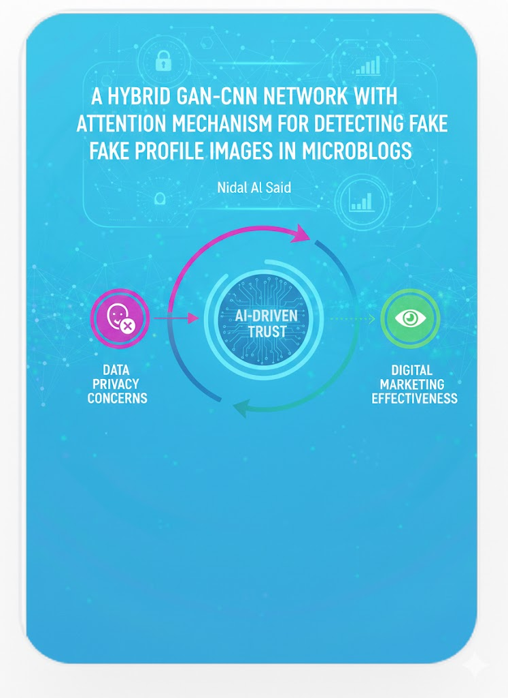

Dr. Nidal Al Said

Academic Leadership & Strategic Development
Leading academic programs, committees, and strategic initiatives with a focus on excellence and innovation.
Accreditation & Quality Assurance
Expertise in accreditation standards, quality frameworks, and continuous improvement systems.
Institutional Effectiveness & Assessment
Driving institutional performance through data, KPIs, assessment, and evidence-informed decision making.
AI & Research Excellence
Research in AI & ML, intelligent systems, data analytics, and interdisciplinary applied AI solutions.
Curriculum Development & Learning Outcomes
Designing outcome-based curricula, assessments, and student-centered learning experiences.
Research Impact & Innovation
Author of books, 50+ publications, patents, and impactful research in AI and smart systems.
AI-Driven Communication and Media Technologies
Publications, books, and protected innovations focused on intelligent media systems, social media analytics, content authenticity, human-AI interaction, and trustworthy digital communication technologies.


Does data privacy influence digital marketing? The mediating role of AI-driven trust
This research examines how AI-driven trust mechanisms mediate the impact of data privacy concerns on digital marketing effectiveness.

A Hybrid GAN-CNN Network with Attention Mechanism for Detecting Fake Profile Images in Microblogs
This work develops a hybrid GAN-CNN architecture using a Gram matrix and self-attention to detect synthetic profile images.
Data Analytics and Visualization Device
A specialized device created for advanced data processing, analytical interpretation, and visual information display.
Human-Centered Artificial Intelligence System for Intelligent Data Analytics
A human-centered AI framework that blends intelligent analytics with transparency, ethical governance, and oversight.
Edge AI for Real-Time Social Media Security
More details will be announced soon.
Visitors: